data("banco.misto", package = 'minicursoTRI2025')4 Análise com itens dicotômicos e politômicos
4.1 Preparação
Importar banco
Nome das variáveis do banco
names(banco.misto) [1] "IME_2801" "IME_6196" "IME_6042" "IME_2416" "IME_5228" "IME_2228"
[7] "IME_2647" "IME_1742" "IME_1437" "IME_5369" "IME_6881" "IME_6411"
[13] "IME_9707" "IME_2376" "IME_2405" "IME_3939" "IME_1554" "IME_4568"
[19] "IME_2727" "IME_4274" "IME_3586" "IME_6972" "IME_9082" "IME_9631"
[25] "IME_6436" "IME_5479" "IME_6958" "IME_2786" "IME_8580" "IME_7417"
[31] "IME_9843" "IME_4882" "IME_4071" "IME_4005" "IME_9948" "IME_7131"
[37] "IME_9079" "IME_8825" "IME_5113" "IME_5104" "IME_8184" "IME_2565"
[43] "IME_6445" "IME_3341" "IME_8694" "IME_1433" "IME_3127" "IME_8340"
[49] "IME_9914" "IME_6379" "IRC_7671" "IRC_5373" "IRC_6255" "IRC_9192"
[55] "IRC_8276" "IRC_7024" "IRC_3451" "IRC_4181" "IRC_7970" "IRC_2335"São 60 itens, sendo 50 Itens de Múltipla Escolha (IME) e 10 Itens de Resposta Construída (IRC).
4.2 Calibração
4.2.1 Calibração inicial (V0)
Gerar a tabela inicial de parâmetros
tab.pars <- mirt(data = banco.misto, model = 1, itemtype = c(rep('3PL', 50), rep('graded', 10)), TOL = 0.001, pars = 'values')Configurar as prioris, considerando que os IMEs possuem cinco categorias de resposta.
tab.pars[tab.pars$name == 'a1', 'value'] <- 1.7
tab.pars[tab.pars$name == 'a1', 'prior_1'] <- 0.53062825106217
tab.pars[tab.pars$name == 'a1', 'prior_2'] <- 0.5
tab.pars[tab.pars$name == 'a1', 'prior.type'] <- 'lnorm'
tab.pars[tab.pars$name == 'a1', 'lbound'] <- 0
tab.pars[tab.pars$name == 'a1', 'ubound'] <- Inf
tab.pars[tab.pars$name == 'g', 'value'] <- .2
tab.pars[tab.pars$name == 'g', 'prior_1'] <- 5
tab.pars[tab.pars$name == 'g', 'prior_2'] <- 17
tab.pars[tab.pars$name == 'g', 'prior.type'] <- 'expbeta'
tab.pars[tab.pars$name == 'g', 'lbound'] <- 0
tab.pars[tab.pars$name == 'g', 'ubound'] <- 1Calibrar os itens
fit <- mirt(data = banco.misto, model = 1, itemtype = c(rep('3PL', 50), rep('graded', 10)), TOL = 0.001, pars = tab.pars)4.2.1.1 Gráficos
Curva de informação do teste
plot(fit, type = 'info')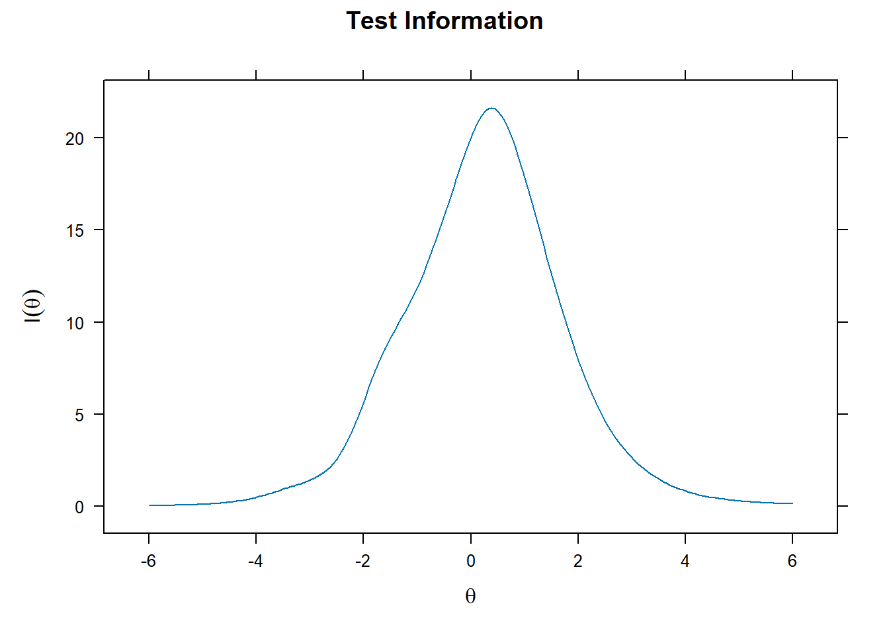
Confiabilidade do teste em função do escore
plot(fit, type = 'rxx')
Erro padrão de medida em função do escore
plot(fit, type = 'SE')
Informação do teste e erro padrão
plot(fit, type = 'infoSE')
Curva de informação de cada item
plot(fit, type = 'infotrace')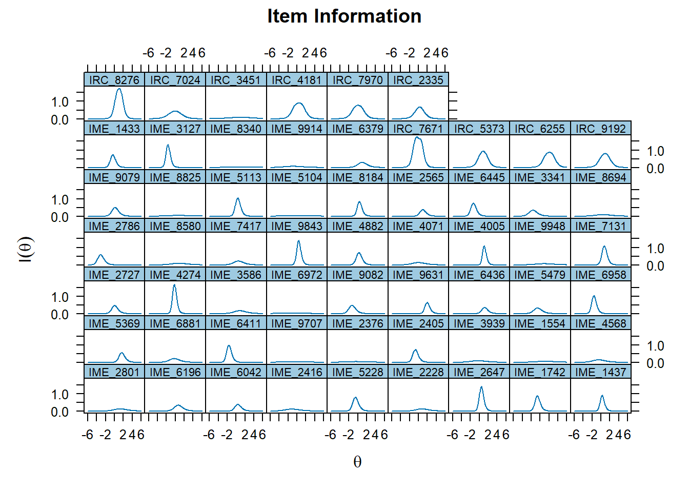
Curva característica de cada item
plot(fit, type = 'trace')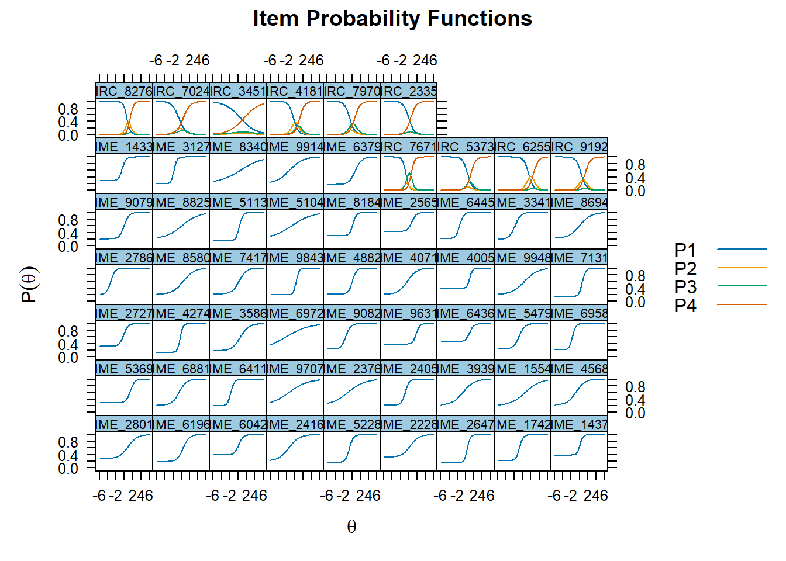
Gráficos de cada item
itemplot(fit, 1, 'info')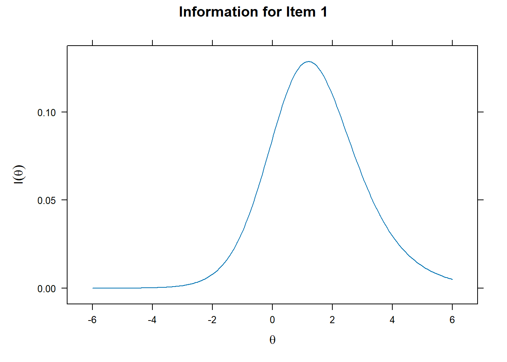
itemplot(fit, 1, 'SE')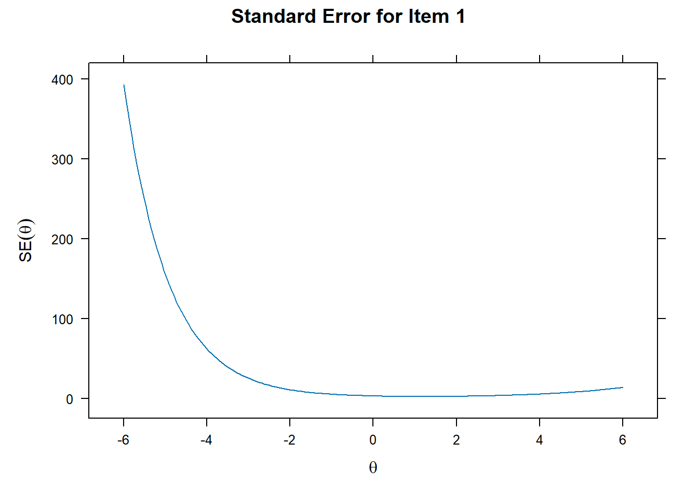
itemplot(fit, 1, 'trace')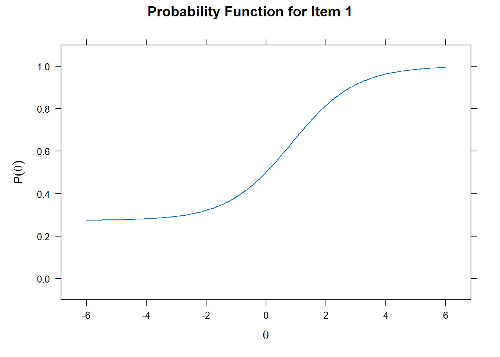
itemplot(fit, 1, 'infoSE')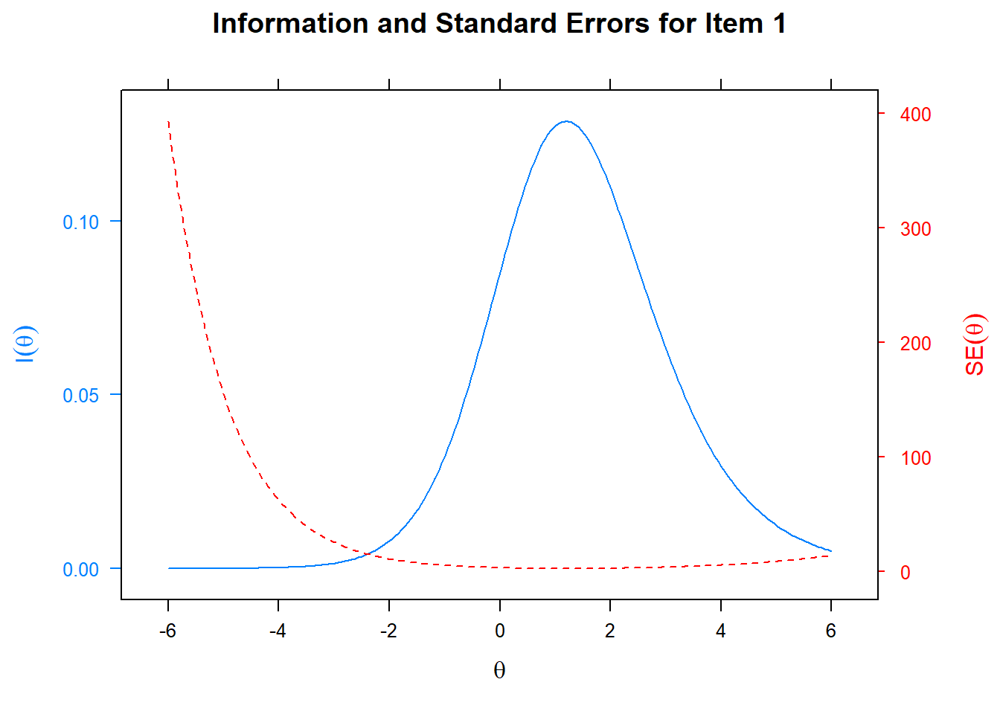
itemplot(fit, 1, 'infotrace')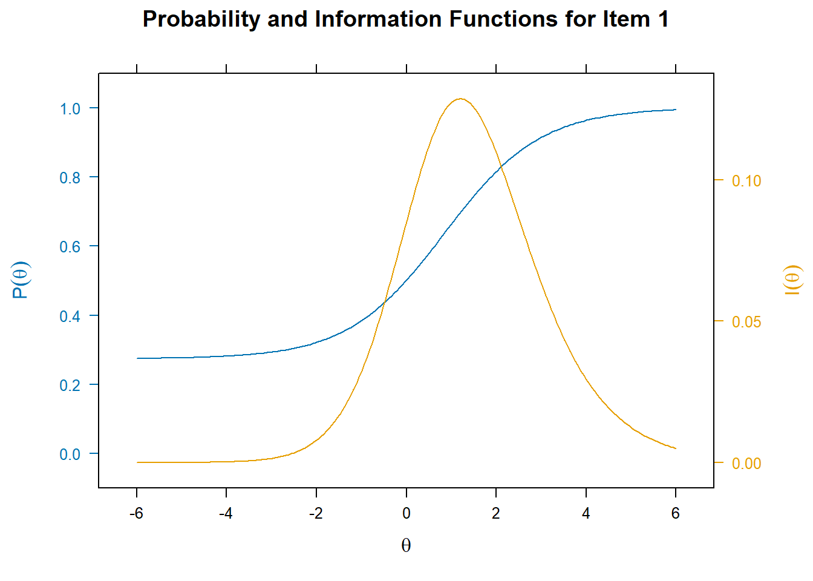
4.2.2 Análise dos parâmetros dos itens (V1)
coef(fit, IRTpars = TRUE, simplify = TRUE)$items
a b g u b1 b2 b3
IME_2801 0.933 0.843 0.274 1 NA NA NA
IME_6196 1.397 0.436 0.188 1 NA NA NA
IME_6042 1.820 0.136 0.388 1 NA NA NA
IME_2416 0.813 -1.494 0.208 1 NA NA NA
IME_5228 2.067 -0.616 0.163 1 NA NA NA
IME_2228 0.977 0.339 0.322 1 NA NA NA
IME_2647 2.743 0.393 0.156 1 NA NA NA
IME_1742 2.291 -0.732 0.214 1 NA NA NA
IME_1437 2.768 0.142 0.385 1 NA NA NA
IME_5369 1.956 1.441 0.289 1 NA NA NA
IME_6881 1.143 -0.544 0.214 1 NA NA NA
IME_6411 2.392 -1.729 0.198 1 NA NA NA
IME_9707 0.448 -1.435 0.207 1 NA NA NA
IME_2376 0.497 -0.987 0.205 1 NA NA NA
IME_2405 2.099 -0.844 0.219 1 NA NA NA
IME_3939 0.738 -0.689 0.209 1 NA NA NA
IME_1554 0.570 0.607 0.202 1 NA NA NA
IME_4568 0.939 -0.847 0.220 1 NA NA NA
IME_2727 1.844 -0.195 0.316 1 NA NA NA
IME_4274 2.930 -0.262 0.133 1 NA NA NA
IME_3586 0.969 0.525 0.181 1 NA NA NA
IME_6972 0.364 -2.185 0.205 1 NA NA NA
IME_9082 1.723 -1.466 0.229 1 NA NA NA
IME_9631 2.304 1.771 0.380 1 NA NA NA
IME_6436 1.870 0.926 0.453 1 NA NA NA
IME_5479 1.428 -0.821 0.235 1 NA NA NA
IME_6958 2.457 -1.666 0.210 1 NA NA NA
IME_2786 1.863 -3.289 0.201 1 NA NA NA
IME_8580 0.746 0.414 0.201 1 NA NA NA
IME_7417 1.158 0.222 0.217 1 NA NA NA
IME_9843 2.846 0.314 0.195 1 NA NA NA
IME_4882 2.074 0.130 0.218 1 NA NA NA
IME_4071 0.891 -0.369 0.207 1 NA NA NA
IME_4005 3.055 0.977 0.392 1 NA NA NA
IME_9948 0.640 0.453 0.198 1 NA NA NA
IME_7131 2.385 0.695 0.139 1 NA NA NA
IME_9079 1.712 -0.066 0.207 1 NA NA NA
IME_8825 0.509 0.128 0.206 1 NA NA NA
IME_5113 2.361 0.294 0.147 1 NA NA NA
IME_5104 0.421 -0.803 0.207 1 NA NA NA
IME_8184 2.450 0.238 0.302 1 NA NA NA
IME_2565 1.877 0.711 0.428 1 NA NA NA
IME_6445 2.112 -1.463 0.213 1 NA NA NA
IME_3341 1.413 -1.826 0.194 1 NA NA NA
IME_8694 0.745 0.041 0.217 1 NA NA NA
IME_1433 2.242 -0.534 0.279 1 NA NA NA
IME_3127 2.751 -1.741 0.191 1 NA NA NA
IME_8340 0.396 0.594 0.210 1 NA NA NA
IME_9914 0.640 -1.350 0.202 1 NA NA NA
IME_6379 1.274 0.787 0.170 1 NA NA NA
IRC_7671 2.413 NA NA NA -0.704 -0.349 0.578
IRC_5373 1.754 NA NA NA 0.478 0.692 1.258
IRC_6255 1.705 NA NA NA 1.484 2.516 2.634
IRC_9192 1.629 NA NA NA 0.450 1.255 1.378
IRC_8276 2.404 NA NA NA 0.617 1.299 1.404
IRC_7024 1.207 NA NA NA -0.582 0.030 0.448
IRC_3451 0.547 NA NA NA 0.617 0.833 1.395
IRC_4181 1.707 NA NA NA -0.343 0.534 1.152
IRC_7970 1.586 NA NA NA -0.520 -0.163 0.695
IRC_2335 1.536 NA NA NA 0.019 0.239 0.463
$means
F1
0
$cov
F1
F1 1Armazenar os parâmetros em um objeto
pars <- data.frame(coef(fit, IRTpars = TRUE, simplify = TRUE)$items)
pars a b g u b1 b2 b3
IME_2801 0.9333110 0.8431687 0.2738618 1 NA NA NA
IME_6196 1.3966245 0.4358323 0.1884184 1 NA NA NA
IME_6042 1.8200476 0.1364890 0.3878231 1 NA NA NA
IME_2416 0.8134274 -1.4936104 0.2084080 1 NA NA NA
IME_5228 2.0673337 -0.6155756 0.1633001 1 NA NA NA
IME_2228 0.9768479 0.3393796 0.3218452 1 NA NA NA
IME_2647 2.7425083 0.3934639 0.1562361 1 NA NA NA
IME_1742 2.2912997 -0.7315294 0.2137012 1 NA NA NA
IME_1437 2.7681658 0.1419022 0.3850390 1 NA NA NA
IME_5369 1.9558039 1.4412107 0.2885158 1 NA NA NA
IME_6881 1.1431800 -0.5441748 0.2137776 1 NA NA NA
IME_6411 2.3918856 -1.7288065 0.1977068 1 NA NA NA
IME_9707 0.4482291 -1.4346212 0.2071189 1 NA NA NA
IME_2376 0.4968861 -0.9873322 0.2052859 1 NA NA NA
IME_2405 2.0985709 -0.8437899 0.2188553 1 NA NA NA
IME_3939 0.7375823 -0.6886315 0.2094584 1 NA NA NA
IME_1554 0.5702567 0.6070965 0.2024641 1 NA NA NA
IME_4568 0.9385829 -0.8467838 0.2202114 1 NA NA NA
IME_2727 1.8439372 -0.1951071 0.3157657 1 NA NA NA
IME_4274 2.9301757 -0.2619318 0.1329982 1 NA NA NA
IME_3586 0.9688490 0.5254432 0.1807632 1 NA NA NA
IME_6972 0.3644981 -2.1852185 0.2045954 1 NA NA NA
IME_9082 1.7232423 -1.4659150 0.2293080 1 NA NA NA
IME_9631 2.3036937 1.7711546 0.3796293 1 NA NA NA
IME_6436 1.8698224 0.9263637 0.4527068 1 NA NA NA
IME_5479 1.4281737 -0.8209602 0.2349581 1 NA NA NA
IME_6958 2.4565891 -1.6664214 0.2098317 1 NA NA NA
IME_2786 1.8631112 -3.2887529 0.2007891 1 NA NA NA
IME_8580 0.7461847 0.4142135 0.2013160 1 NA NA NA
IME_7417 1.1576260 0.2220573 0.2173599 1 NA NA NA
IME_9843 2.8457278 0.3144728 0.1953545 1 NA NA NA
IME_4882 2.0739191 0.1301044 0.2184821 1 NA NA NA
IME_4071 0.8914844 -0.3688656 0.2066603 1 NA NA NA
IME_4005 3.0547332 0.9767776 0.3924289 1 NA NA NA
IME_9948 0.6397032 0.4531380 0.1982019 1 NA NA NA
IME_7131 2.3850238 0.6947010 0.1390054 1 NA NA NA
IME_9079 1.7122264 -0.0661687 0.2066418 1 NA NA NA
IME_8825 0.5088781 0.1283853 0.2060370 1 NA NA NA
IME_5113 2.3613503 0.2943221 0.1472465 1 NA NA NA
IME_5104 0.4210399 -0.8028135 0.2066047 1 NA NA NA
IME_8184 2.4504916 0.2377840 0.3015451 1 NA NA NA
IME_2565 1.8768737 0.7112042 0.4280473 1 NA NA NA
IME_6445 2.1124129 -1.4630213 0.2131074 1 NA NA NA
IME_3341 1.4125245 -1.8255361 0.1939104 1 NA NA NA
IME_8694 0.7448782 0.0413092 0.2170145 1 NA NA NA
IME_1433 2.2415700 -0.5342601 0.2786922 1 NA NA NA
IME_3127 2.7507093 -1.7406323 0.1906238 1 NA NA NA
IME_8340 0.3960031 0.5939755 0.2100789 1 NA NA NA
IME_9914 0.6397733 -1.3501473 0.2023444 1 NA NA NA
IME_6379 1.2738845 0.7867372 0.1695290 1 NA NA NA
IRC_7671 2.4129786 NA NA NA -0.70431228 -0.34896883 0.5783377
IRC_5373 1.7536634 NA NA NA 0.47754559 0.69166563 1.2580814
IRC_6255 1.7053703 NA NA NA 1.48382096 2.51590808 2.6338493
IRC_9192 1.6287583 NA NA NA 0.45006428 1.25489716 1.3777247
IRC_8276 2.4041548 NA NA NA 0.61735685 1.29887616 1.4043293
IRC_7024 1.2065941 NA NA NA -0.58220180 0.02979808 0.4479802
IRC_3451 0.5474406 NA NA NA 0.61658910 0.83302105 1.3946684
IRC_4181 1.7066211 NA NA NA -0.34318699 0.53355452 1.1515827
IRC_7970 1.5855350 NA NA NA -0.51996721 -0.16313568 0.6946162
IRC_2335 1.5358174 NA NA NA 0.01949704 0.23856252 0.4627136Identificar itens com problemas de parâmetro. Excluir os itens que atendam a pelo menos um dos seguintes critérios: 1. a < 0.5 2. a > 4.0 3. todos os parâmetros b fora do intervalo de –2.5 a 2.5 4. c > 0.45
prob.a <- rownames(pars)[pars$a < 0.5 | pars$a > 4.0]
prob.b <- rownames(pars)[(apply(pars[, c('b', 'b1', 'b2', 'b3')], 1, function (x) all(x < -2.5 | x > 2.5, na.rm = TRUE)))]
prob.c <- rownames(pars)[pars$g > 0.45]
problemas <- c(prob.a, prob.b, prob.c)
problemas [1] "IME_9707" "IME_2376" "IME_6972" "IME_5104" "IME_8340" "IME_2786"
[7] "IME_6436" NA NA NA NA NA
[13] NA NA NA NA NA Caso um item seja excluído, seu parâmetro “a” deve ser definido como 0 (zero) na tabela de parâmetros e a variável est deve ser definida como FALSE para todos os parâmetros correspondentes a esse item.
tab.pars2 <- tab.pars
tab.pars2[tab.pars2$item %in% problemas & tab.pars2$name == 'a1', 'value'] <- 0
tab.pars2[tab.pars2$item %in% problemas, 'est'] <- FALSE
fit2 <- mirt(data = banco.misto, model = 1, itemtype = c(rep('3PL', 50), rep('graded', 10)), TOL = 0.001, pars = tab.pars2)Dessa vez, note que os parâmetros dos itens excluídos ficaram estranhos. Não sei dizer ao certo o motivo, mas creio que tem alguma relação com o fato de o teste ter IME e IRC. Se fosse só IME, isso não aconteceria. Mas veja:
pars2 <- data.frame(mirt::coef(fit2, IRTpars = TRUE, simplify = TRUE)$items)
pars2 a b g u a1 d b1
IME_2801 0.9358980 0.85573002 0.2750181 1 NA NA NA
IME_6196 1.3971395 0.44429432 0.1888739 1 NA NA NA
IME_6042 1.8207850 0.14710844 0.3890971 1 NA NA NA
IME_2416 0.8102522 -1.49555435 0.2075510 1 NA NA NA
IME_5228 2.0642702 -0.61292379 0.1629201 1 NA NA NA
IME_2228 0.9622486 0.33548996 0.3183992 1 NA NA NA
IME_2647 2.7465374 0.40119448 0.1568987 1 NA NA NA
IME_1742 2.2891140 -0.72918881 0.2135651 1 NA NA NA
IME_1437 2.7650584 0.14707977 0.3846643 1 NA NA NA
IME_5369 1.9732055 1.44602158 0.2885581 1 NA NA NA
IME_6881 1.1380615 -0.53831306 0.2144690 1 NA NA NA
IME_6411 2.3868927 -1.72997663 0.1985393 1 NA NA NA
IME_9707 NA NA -1.3862944 999 0 1.1396254 NA
IME_2376 NA NA -1.3862944 999 0 0.9744948 NA
IME_2405 2.0890176 -0.84808421 0.2151387 1 NA NA NA
IME_3939 0.7372063 -0.68645291 0.2082449 1 NA NA NA
IME_1554 0.5697656 0.60907263 0.2013940 1 NA NA NA
IME_4568 0.9347655 -0.84869736 0.2183235 1 NA NA NA
IME_2727 1.8295097 -0.19659776 0.3133153 1 NA NA NA
IME_4274 2.9088544 -0.25804026 0.1335046 1 NA NA NA
IME_3586 0.9698367 0.53556943 0.1814687 1 NA NA NA
IME_6972 NA NA -1.3862944 999 0 1.3050320 NA
IME_9082 1.7185563 -1.46600706 0.2294763 1 NA NA NA
IME_9631 2.3966923 1.76915969 0.3803847 1 NA NA NA
IME_6436 NA NA -1.3862944 999 0 0.4471942 NA
IME_5479 1.4248678 -0.82054641 0.2336032 1 NA NA NA
IME_6958 2.4555638 -1.66483343 0.2119760 1 NA NA NA
IME_2786 NA NA -1.3862944 999 0 4.7048893 NA
IME_8580 0.7496513 0.42954955 0.2032715 1 NA NA NA
IME_7417 1.1571269 0.23130144 0.2180193 1 NA NA NA
IME_9843 2.8338967 0.32186760 0.1957508 1 NA NA NA
IME_4882 2.0798810 0.14056177 0.2204848 1 NA NA NA
IME_4071 0.8892221 -0.36039370 0.2074151 1 NA NA NA
IME_4005 3.1060655 0.98085403 0.3919410 1 NA NA NA
IME_9948 0.6373342 0.46224786 0.1981338 1 NA NA NA
IME_7131 2.3853427 0.70131979 0.1389165 1 NA NA NA
IME_9079 1.7101879 -0.05770491 0.2079205 1 NA NA NA
IME_8825 0.5083683 0.14206089 0.2069728 1 NA NA NA
IME_5113 2.3637730 0.30071323 0.1474879 1 NA NA NA
IME_5104 NA NA -1.3862944 999 0 0.8339139 NA
IME_8184 2.4382324 0.24224010 0.3007124 1 NA NA NA
IME_2565 1.9335282 0.72428094 0.4305994 1 NA NA NA
IME_6445 2.1058162 -1.46247678 0.2142300 1 NA NA NA
IME_3341 1.4054869 -1.82861542 0.1943571 1 NA NA NA
IME_8694 0.7449754 0.05220357 0.2178317 1 NA NA NA
IME_1433 2.2509833 -0.52602212 0.2810847 1 NA NA NA
IME_3127 2.7514633 -1.74378237 0.1892144 1 NA NA NA
IME_8340 NA NA -1.3862944 999 0 0.2867381 NA
IME_9914 0.6383839 -1.34545700 0.2026396 1 NA NA NA
IME_6379 1.2750020 0.79465738 0.1697166 1 NA NA NA
IRC_7671 2.4047893 NA NA NA NA NA -0.70375812
IRC_5373 1.7441956 NA NA NA NA NA 0.48339299
IRC_6255 1.6951246 NA NA NA NA NA 1.49707385
IRC_9192 1.6220576 NA NA NA NA NA 0.45851115
IRC_8276 2.3939590 NA NA NA NA NA 0.62584246
IRC_7024 1.2065347 NA NA NA NA NA -0.57978427
IRC_3451 0.5478313 NA NA NA NA NA 0.61901165
IRC_4181 1.6986794 NA NA NA NA NA -0.34028106
IRC_7970 1.5781636 NA NA NA NA NA -0.51932453
IRC_2335 1.5303168 NA NA NA NA NA 0.02249731
b2 b3
IME_2801 NA NA
IME_6196 NA NA
IME_6042 NA NA
IME_2416 NA NA
IME_5228 NA NA
IME_2228 NA NA
IME_2647 NA NA
IME_1742 NA NA
IME_1437 NA NA
IME_5369 NA NA
IME_6881 NA NA
IME_6411 NA NA
IME_9707 NA NA
IME_2376 NA NA
IME_2405 NA NA
IME_3939 NA NA
IME_1554 NA NA
IME_4568 NA NA
IME_2727 NA NA
IME_4274 NA NA
IME_3586 NA NA
IME_6972 NA NA
IME_9082 NA NA
IME_9631 NA NA
IME_6436 NA NA
IME_5479 NA NA
IME_6958 NA NA
IME_2786 NA NA
IME_8580 NA NA
IME_7417 NA NA
IME_9843 NA NA
IME_4882 NA NA
IME_4071 NA NA
IME_4005 NA NA
IME_9948 NA NA
IME_7131 NA NA
IME_9079 NA NA
IME_8825 NA NA
IME_5113 NA NA
IME_5104 NA NA
IME_8184 NA NA
IME_2565 NA NA
IME_6445 NA NA
IME_3341 NA NA
IME_8694 NA NA
IME_1433 NA NA
IME_3127 NA NA
IME_8340 NA NA
IME_9914 NA NA
IME_6379 NA NA
IRC_7671 -0.34706499 0.5845239
IRC_5373 0.69803768 1.2668117
IRC_6255 2.53160280 2.6499906
IRC_9192 1.26219297 1.3852105
IRC_8276 1.30739745 1.4129338
IRC_7024 0.03238581 0.4512792
IRC_3451 0.83515000 1.3967540
IRC_4181 0.53866793 1.1585940
IRC_7970 -0.16099172 0.7015636
IRC_2335 0.24193926 0.4666589Note que o valor de c está negativo, o que não faz sentido. Mas esse valor corresponde ao logit do valor inicial desse parâmetro:
p <- .2
log(p/(1-p))[1] -1.386294O mesmo vale para o parâmetro u, que está maior do que 1.0.
p <- 1
log(p/(1-p))[1] InfAgora vamos ver se existe algum outro item com problema
prob2.a <- rownames(pars2)[pars2$a < 0.5 | pars2$a > 4.0]
prob2.b <- rownames(pars2)[(apply(pars2[, c('b', 'b1', 'b2', 'b3')], 1, function (x) all(x < -2.5 | x > 2.5, na.rm = TRUE)))]
prob2.c <- rownames(pars2)[pars2$g > 0.45]
problemas2 <- c(prob2.a, prob2.b, prob2.c)
problemas2 <- problemas2[!is.na(problemas2)]
problemas2[1] "IME_9707" "IME_2376" "IME_6972" "IME_6436" "IME_2786" "IME_5104" "IME_8340"which(!problemas2 %in% rownames(pars2)[is.na(pars2$a)])integer(0)4.2.3 Verificar ajuste (V2)
Para verificar o ajuste dos itens, vamos usar a medida de RMSD. Eu adaptei a função do mirt para rodar com um grupo único.
ajuste <- INEPsico::dif.mirt(fit2)Warning in INEPsico::dif.mirt(fit2): Como o grupo antigo não foi incluído, não
será feita análise de DIF.ajuste$rmsd.pisa P.0 P.1 P.2 P.3 P.4
IME_9707 0.1101192 0.1101192 NA NA NA
IME_2376 0.1203393 0.1203393 NA NA NA
IME_6436 0.1557912 0.1557912 NA NA NA
IME_5104 0.1147956 0.1147956 NA NA NA
IME_8340 0.1169657 0.1169657 NA NA NAwhich(!rownames(ajuste$rmsd.pisa) %in% rownames(pars2)[is.na(pars2$a)])integer(0)4.2.3.1 Gráficos
Curva de informação do teste
plot(fit, type = 'info')Confiabilidade do teste em função do escore
plot(fit, type = 'rxx')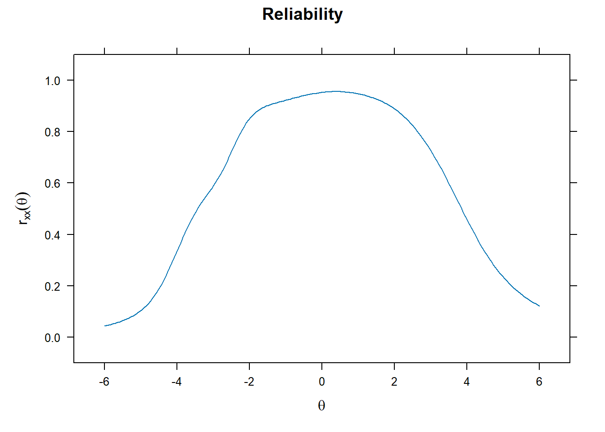
Erro padrão de medida em função do escore
plot(fit, type = 'SE')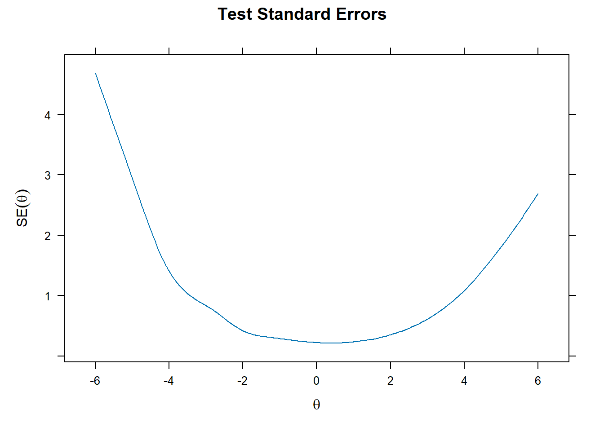
Informação do teste e erro padrão
plot(fit, type = 'infoSE')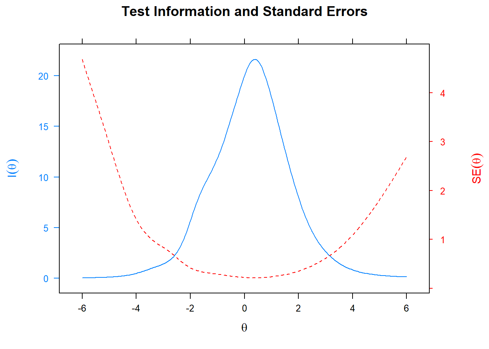
Curva de informação de cada item
plot(fit, type = 'infotrace')Curva característica de cada item
plot(fit, type = 'trace')